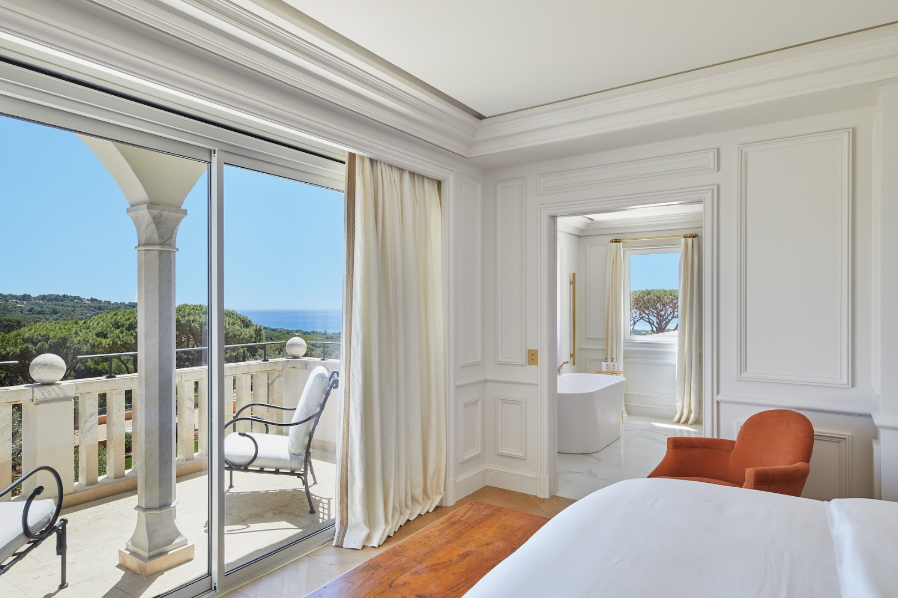

Una selezione accurata di affascinanti strutture e luoghi indimenticabili, dedicati a viaggiatori consapevoli e capaci di lasciarsi impressionare dalla cura e dallo Charme Francese. Riceverai i consigli per scoprire e vivere al meglio la terra suggestiva di Saint Tropez. Esperienze sensoriali e uniche, immerso in luoghi da sogno che hanno tutto il fascino e l'eleganza del lusso e la semplicita' di un ambiente naturale ricco di vegetazione e tradizione.
“St. Tropez is a village that sets you daydreaming, triggers a kind of madness, mild or otherwise; something instant and universally acknowledged, in any case, to be found nowhere else in the world"
Scopri il comfort e la bellezza degli Hotel di Lusso. Unici per la loro struttura e per i loro paesaggi, incarnano pienamente lo stile della Dolce Vita. Le destinazioni perfette per un sogno in Riviera, tra camere e suites ognuna diversa dalle altre per dimensioni e Design.
Sulla magnifica spiaggia di Pampelonne, in stile "Boho Chic", moda che si ispira alla cultura bohemien e all'estetica hippie degli anni '60 e '70, si estendono stabilimenti balneari conosciuti in tutto il mondo e soprattutto dalle star internazionali che arrivano direttamente dai loro Yacht per rilassarsi durante le vacanze.
Dopo aver trascorso il pomeriggio tra le boutique di lusso o sui lettini della Riviera, potrai rilassarti sorseggiando un buonissimo cocktail accompagnato da musica lounge, nelle location piu' ambite di Saint Tropez. Comode poltroncine sulla spiaggia o una terrazza con vista panoramica sul golfo assicureranno un aperitivo perfetto .
Un'ampia varieta' di scelta delle cucine di tutto il mondo sara' pronta a soddisfare i gusti di ogni palato. Ottime pietanze verranno servite ciascuna in un'atmosfera differente. Si passa dai colori, odori e sapori orientali a quelli mediterranei, con arredi di design, musica e veri e propri show che coinvolgeranno tutti i commensali.
Saint Tropez e' la terra del divertimento. Ospiti, Dj internazionali, musica e ballerine saranno i protagonisti delle serate che potrai fare all'interno dei locali piu' esclusivi .